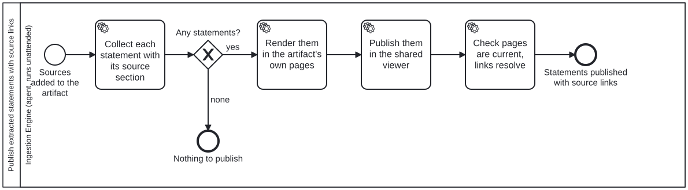

Generated from
folio-assistant-core/skills/library/ingestion/publish-extracted-statements.md— do not edit here.
Publish extracted statements with source links
A statement nobody can read beside its source is reviewed from memory, or not at all. So whenever source documents are added to a folio’s working artifact (a document, a paper, an implementation guide, a guideline), the statements extracted from them are published where a reader of that artifact will find them, each one linked back to where it came from.
This is a standard step, not a per-folio choice. It is the sub-process
Process_PublishExtractedStatements, and every process that brings source
documents into an artifact calls it:
| caller | when |
|---|---|
l1-document-ingestion | right after the entry is promoted, which is where it becomes complete |
authoring-a-document, and each content type’s authoring process | before the artifact is rendered, so a source taken up since ingestion, or a statement changed since, is published too |
What is published
A statement is a sentence or row captured verbatim from a library entry, whatever kind the extraction gave it: a recommendation, a requirement, a candidate a person has still to rule on. It is published as captured, with its status. This step neither promotes nor edits it.
Each statement carries two links:
- the library entry: the entry’s own page in the library viewer;
- the section: the section of that entry the statement was read from,
labelled with the section’s title and its locator in the source’s own unit,
read off the entry’s
structure.json. For example “Catch up schedule, slide 7”, “Annex 2, page 41”, “Setup, cells 3–9”.
The link is a library reference
(instance, libraryId, sectionId), so a statement from another
instance’s library resolves through that instance’s declaration and never
through a relative path. A statement whose section does not resolve is
reported, never published without a link: an untraceable statement is the
failure this step exists to prevent.
Where it is published — both places, from one list
| place | what a reader gets |
|---|---|
| the artifact’s own pages | the statements of the sources this artifact draws on, inside the artifact, so a reader need not leave it |
| the shared extraction viewer | every source and every statement extracted from it, whichever artifact uses them, reached from the site’s Sources menu |
Both are generated from one collected list, so they cannot disagree about what was extracted or where it came from. Neither is hand-edited: a person corrects the extraction or the source, then regenerates.
What the content type supplies, and nothing more
The step is the same for every content type. What differs is how the
artifact’s pages look, and that is the content type’s adapter’s business,
declared in its content profile
(folio-content-profiles):
- a document (a handbook, policy guidance): pages of the document;
- a paper: an appendix or a section of the paper;
- an implementation guide or a guideline built as one: pages of the guide.
The platform layers name no folio, no content type and no level of a guideline. A folio’s own names for its pages (for example “L1 Recommendations” and “Scenario Candidates” in an immunization guideline) are the folio’s, set in its own configuration.
Run it
bun run cat statements:pages --page <spec>.json [--page <spec2>.json] [--check]
Each page is declared in a committed page spec (folio-statement-page/v1):
the statement lists it publishes, the page it writes, its title and
introduction, the URL prefixes of the library viewer (entryBase) and of the
sources (sectionBase), and the content type’s table look (tableAttr). A
spec rather than flags, because those are free text, and free text is never a
command-line word.
A spec names one or more statement lists (folio-extracted-statements/v1,
schemas/extracted-statement.ts):
each statement’s id, its text verbatim, its kind and status as the
extraction records them, and its source, a library reference with either a
sectionId or the page (or slide) it was read from. With only a page, the
section is the one that starts latest at or before it. When several sections
start on that page (a one-page poster), the label names only the page. The front
matter the PDF rung synthesises (sec-front-matter) is used only when no
authored section starts at or before the page.
A collector writes the list, and the collector is not core’s. A folio’s extraction has its own format (a guideline’s recommendation rows, a DAK layer’s requirement candidates, a paper’s quoted claims), so the content layer or the folio that owns the format turns it into a statement list. Core resolves, labels, renders and checks. Declare two specs over the same lists, one for the artifact’s page and one for the shared viewer’s, so the two cannot disagree.
Staleness fails CI
--check regenerates in memory and fails on any
difference from the committed pages, and on any link that does not resolve.
CI runs it, so a change to an extraction or a library entry that was not
republished fails the build instead of leaving a page that says something the
extraction no longer does.
Nothing to publish is a result
A referenced source (its licence forbids a copy), a dataset, or a source with no normative content yields no statements. The sub-process ends at “Nothing to publish”, which is a determined zero, recorded as such, not a skipped step.
Related
l1-document-ingestion: produces the entry and its candidates.l1-coverage: accounts for every normative sentence. Coverage asks whether everything was captured; this step makes what was captured readable and traceable. Neither implies the other.document-intake: the stages an upload goes through.
Processes that run this skill
This skill has its own process: Publish extracted statements with source links.

| process | step(s) that name it |
|---|---|
| Authoring a document | Publish extracted statements (calls a sub-process) |
| L1 document ingestion — a document to the L1 source knowledge graph | Publish the extracted statements with source links (calls a sub-process) |
| Publish extracted statements with source links | Collect each statement with its source section; Render them in the artifact’s own pages; Publish them in the shared viewer; Check pages are current, links resolve |